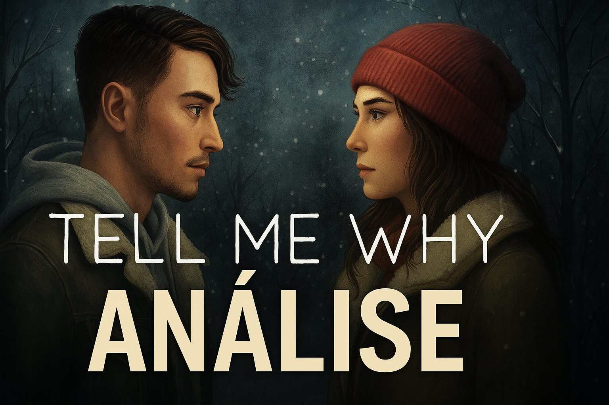
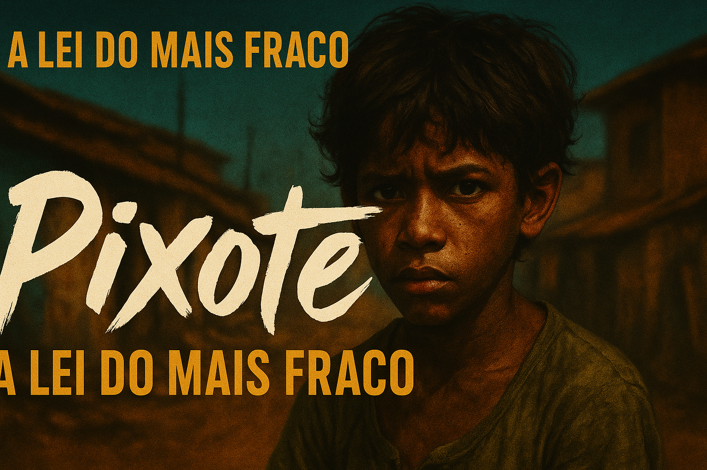

Trilha Sonora Imersiva
A trilha sonora de Hellblade é um espetáculo à parte. Desenvolvida por David García
em
parceria com Andy LaPlegua, fundador da banda Combichrist, a música contribui com
uma
atmosfera intensa, tribal e sombria. O estilo agressivo de LaPlegua casa perfeitamente com o universo viking
sombrio e psicológico do jogo, reforçando o clima de tensão e isolamento da protagonista.
Visual & Direção de Arte
Jogado no PC, o game impacta tanto no som quanto nos visuais. A direção de arte é
fantástica, entregando um cenário estonteante e, ao mesmo tempo, aterrorizante. A ambientação
combina beleza e inquietação, refletindo o estado mental da personagem principal, Senua. O visual é
cinematográfico e envolvente.
Pontos Negativos
Apesar de seus méritos, o jogo peca em alguns momentos com repetitividade exagerada. Certas
mecânicas e combates poderiam ser mais variados.
Platina & Dificuldade
A platina é relativamente fácil, levando cerca de 9 horas na primeira
jogatina.
O jogo tem um nível de dificuldade 3/5 e não possui outros modos além do
modo
história.
Desenvolvedora
Desenvolvido pela Ninja Theory, conhecida por jogos com narrativa intensa e experiências
cinematográficas.
Proposta & Público-Alvo
O jogo é uma jornada emocional que explora psicoses e transtornos mentais, contando a
história
de Senua, uma guerreira celta atormentada por vozes internas enquanto busca resgatar a alma de seu amado no
submundo.
É indicado para pessoas que gostam de jogos com narrativa profunda, sombria e reflexiva. Não recomendado para jogadores sensíveis ou que têm pouco tempo, pois a experiência exige
atenção emocional e imersão total.
Resumo da Experiência
No contexto proposto, a experiência foi relativamente boa, destacando-se pela imersão visual
e
auditiva. Hellblade é uma obra que não se propõe a agradar todos, mas sim tocar profundamente quem
estiver disposto a embarcar nessa jornada intensa com Senua.

Visual & Direção de Arte
Desenvolvido pela Dontnod Entertainment, Tell Me Why entrega uma estética suave, com cenários naturais
detalhados, interiores aconchegantes e uma direção de arte voltada para o realismo emocional. Cada ambiente
ajuda a reforçar a conexão íntima entre os personagens e o passado.
Trilha Sonora
A trilha sonora assinada por Ryan Lott (Son Lux) é sutil e introspectiva. Composições suaves acompanham o
clima melancólico da narrativa, reforçando temas como identidade, perda e reconciliação. A música cumpre seu
papel emocional sem exageros.
Proposta & Temática
O jogo mergulha em temas profundos como **transtornos mentais**, **mudança de gênero**, **trauma emocional** e
**relações familiares rompidas**. A história dos gêmeos Tyler e Alyson é contada por meio de flashbacks
interativos e escolhas morais, onde o jogador reconstrói memórias do passado e decide o rumo da reconciliação
dos personagens com suas dores.
Platina & Dificuldade
Com cerca de **10 horas de duração**, conquistar todas as conquistas é algo simples e direto. O nível de
dificuldade é muito baixo, pois o foco está na narrativa e não em desafios mecânicos. O jogo possui apenas o
modo história.
Para Quem é o Jogo?
Recomendado para jogadores que apreciam experiências narrativas intensas e emocionais. É ideal para quem
valoriza temas sociais e busca uma jornada mais reflexiva.
Não indicado para quem prefere ação, ritmo acelerado ou jogabilidade diversificada.
Resumo da Experiência
Tell Me Why é uma história tocante, que se destaca por sua **representatividade**, **cuidado com temas
sensíveis** e **trabalho emocional delicado**. Apesar disso, pode parecer parado para jogadores que buscam
intensidade. Uma experiência positiva, mas que depende muito do envolvimento emocional do jogador.

Fotografia & Direção
Hector Babenco entrega uma direção crua e realista, com câmera na mão, luz natural e locações reais. A
fotografia é suja, dura, e profundamente eficaz para transmitir a violência da realidade que o filme denuncia.
Trilha Sonora
A trilha de John Neschling é discreta e pontual, dando espaço para os silêncios e os sons urbanos. A ausência
de música em várias cenas aumenta o impacto do realismo.
Temas e Proposta
Um retrato brutal da infância marginalizada no Brasil dos anos 80. O filme expõe o abandono institucional, a
violência policial e a falência do sistema de reabilitação. É uma obra que incomoda — como deve ser.
Reconhecimento & Impacto
Reconhecido internacionalmente, Pixote é mais que um filme: é denúncia. A atuação do jovem Fernando Ramos da
Silva (Pixote) marcou o cinema mundial e escancarou uma realidade que o Brasil insistia em ignorar.
Para Quem é o Filme?
Indicado para quem busca cinema social, cru e transformador. Não recomendado para quem prefere entretenimento
leve ou histórias com alívio cômico.
Resumo da Experiência
*Pixote* é um soco no estômago. Uma obra visceral, incômoda e essencial. Vai muito além do cinema — é um grito
por atenção, justiça e memória.